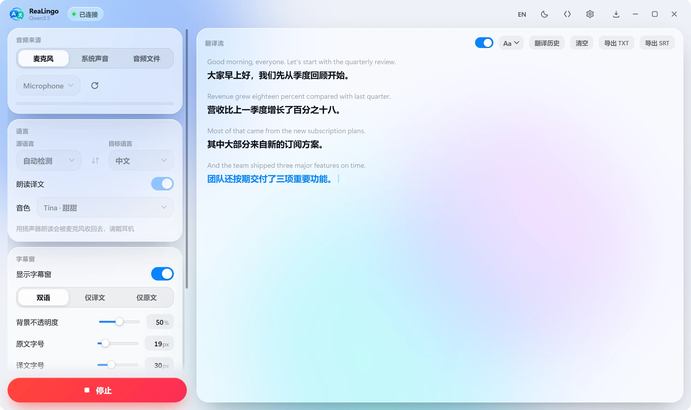
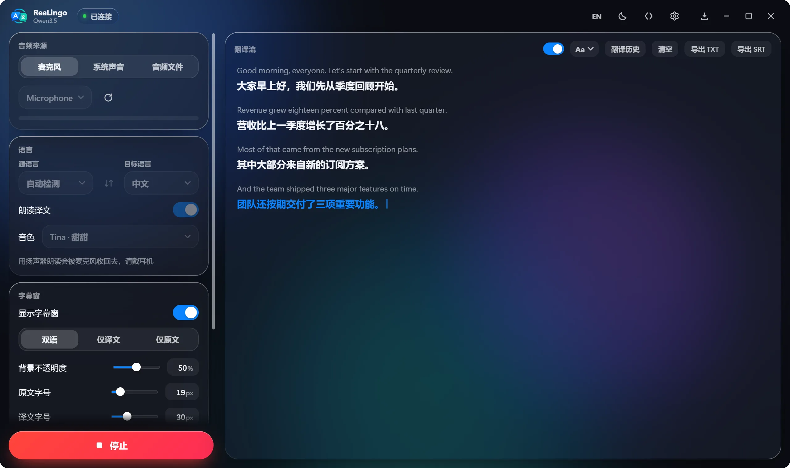

ReaLingo
ReaLingo
ReaLingo
ReaLingo

开会、看视频、上网课时，把麦克风、系统声音或音频文件交给它，译文实时浮在任何窗口上。开源免费，自带阿里云百炼、OpenAI、Google Gemini 或火山引擎豆包的 API Key 即可。In a meeting, a video or a lecture: hand it your mic, system audio or a file, and the translation floats live over any window. Free and open source — bring your own Alibaba Cloud Model Studio, OpenAI, Google Gemini or Volcengine Doubao key.
Android：手机实时翻译与悬浮字幕 ›Android: live translation and floating subtitles on your phone ›

实时翻译、译文朗读、置顶字幕窗、四种接口，打开声音看一遍。Live translation, read-aloud and the floating overlay. Turn the sound on.
Windows、macOS、Linux 各有安装包，Android 提供 APK，下载页可按系统选择。Installers for Windows, macOS and Linux, plus an Android APK — choose your system on the download page.
在设置里选接口，到 百炼控制台、OpenAI、Google AI Studio 或豆包语音控制台拿一个 Key 粘贴进去，详细步骤见常见问题。桌面端优先使用系统凭据库；Android 当前保存在应用私有配置中。Pick an API in Settings and paste a key from the Model Studio console, OpenAI, Google AI Studio or the Doubao Speech console (step by step in the FAQ). Desktop uses the OS credential store when available; Android currently stores it in app-private configuration.
麦克风、系统声音或音频文件三选一，选好目标语言，打开字幕窗，点「开始翻译」。Microphone, system audio or a file; choose the target language, open the overlay, press Start.
下面这些就是设置里的真实选项，动一动看效果。字幕窗默认置顶，锁定后鼠标点击穿透，在它上面右键还能直接改这些设置。These are the real settings — try them. The overlay stays on top, lets clicks through when locked, and takes a right-click to change all this in place.
Photosynthesis turns sunlight into chemical energy.
光合作用把光能转化为化学能。
切换接口，看看各家能译出哪些语言，带喇叭图标的还能朗读。除了豆包要手动指定源语言，其余都能自动检测。Switch between the APIs to see what each translates into — the ones with a speaker can be read aloud. All but Doubao detect the source language for you.
为手机设计的操作界面：翻译麦克风、系统声音或音频文件，用悬浮字幕跨应用查看译文，也能导出翻译记录。A phone-first interface for microphone, system audio, and audio-file translation, with floating subtitles across apps and transcript export.
使用你自己的 API Key，选择语言和音色；朗读可切换扬声器、听筒或耳机。Bring your own API key, choose languages and a voice, and route speech to the speaker, earpiece, or headphones.
看视频或上网课时，在其他应用上显示译文。需授予悬浮窗权限；系统声音采集需要 Android 10+，受保护的音频可能无法采集。Read translations over videos or lectures in other apps. Overlay permission is required; system audio capture needs Android 10+ and may not capture protected audio.
支持 Android 8.0+ 的 arm64 设备。不同厂商的后台与录音行为仍需测试。For arm64 devices on Android 8.0+. Background and recording behavior still needs testing across vendors.
下载 AndroidDownload Android| 麦克风Mic | 系统声音System audio | 朗读时排除自身Leaves its own voice out | 说明Notes | |
|---|---|---|---|---|
| Windows 10 / 11 | WASAPI 回录；朗读时改用 process loopback（Windows 10 2004+）WASAPI loopback; process loopback while reading aloud (Windows 10 2004+) | |||
| macOS 14.4+ | Core Audio tap；首次使用按提示授权Core Audio tap; grant access when asked | |||
| macOS 12 – 14.3 | process tap 是 14.4 才有的系统接口Process taps arrived in 14.4 | |||
| Ubuntu 22.04+ | PulseAudio / PipeWire 的 monitor 源；录系统声音时不朗读PulseAudio / PipeWire monitor sources; no read-aloud while capturing system audio | |||
| Android 8.0+ | 系统声音需 Android 10+，使用系统授权；排除本应用音频，受保护内容可能静音System audio requires Android 10+ and system consent; excludes this app, while protected content may be silent |
只需要一家。不知道选哪家，先看模型与价格；ReaLingo 的设置页里也有各家控制台的直达链接。
桌面端点右上角齿轮（或标题栏下的模型名），在「连接」里选接口并粘贴 Key；Android 点模型卡片选接口，在设置中填写 Key。用百炼时再确认地域。桌面端使用可用的系统凭据库；Android 当前将 Key 明文保存在应用私有配置中，Linux 无凭据库时也使用此回退。不要共享包含 Key 的配置文件。
连不上时，先到设置页「高级」里看最终连接的地址，确认接口、地域和 Key 是同一家、同一个地域的。
You only need one. Not sure which? See Models & pricing. ReaLingo's settings page also links straight to each console.
On desktop, open the gear (or model name below the title-bar logo) and select the provider under Connection. On Android, select the provider in the model card and enter the key in Settings. For Model Studio, confirm the region too. Desktop uses the OS credential store when available. Android currently keeps keys as plaintext in its app-private configuration; Linux without a credential store uses the same fallback. Do not share configuration files containing keys.
Can't connect? Settings → Advanced shows the final endpoint: check that the API, region and key all come from the same vendor and region.
ReaLingo 本身开源免费。翻译由你选的服务（阿里云百炼、OpenAI、Google Gemini 或火山引擎）提供，按你自己账号的用量计费。按官方价目粗算，只听不朗读每分钟大约几分钱人民币，开朗读会贵几倍；各家单价和折算见 模型与价格，最终以各家官网为准。ReaLingo is free and open source. Translation runs on your own account with the service you pick (Alibaba Cloud Model Studio, OpenAI, Google Gemini or Volcengine) and is billed to it. By the official list prices, listening alone costs a few US cents per minute at most, and reading aloud several times that; Models & pricing has each rate — the vendors’ own pages have the final word.
手上有哪家的 Key 就选哪家。语言最全的是 Qwen3.5 / 3.8（60 种，Qwen 还支持热词和 47 种音色）；Gemini 覆盖 54 种且全部能朗读；OpenAI 能译出 13 种；要中英对话互译就选豆包，一场会话里说中文出英文、说英文出中文。模型和接入地址都能自己改，接代理或兼容服务也行。Use whichever key you have. Qwen3.5 / 3.8 cover the most languages (60, plus hotwords and 47 voices); Gemini covers 54, all spoken; OpenAI translates into 13; for a Chinese–English conversation pick Doubao, which translates both ways in one session. Model and endpoint are editable, so a proxy or compatible service works too.
跟你的百炼账号走：国内站的 Key 选北京，国际站的 Key 选新加坡。目前只有这两个地域提供实时翻译模型。设置页「高级」里会显示最终连接的地址；业务空间 ID 选填，填了走专属域名。Match your account: China-site keys use Beijing, international keys use Singapore — the only regions serving the realtime translation models today. Settings → Advanced shows the exact endpoint; a workspace ID is optional and switches to its dedicated domain.
应用没有经过 Apple 公证。把它拖进「应用程序」后，在终端执行 xattr -dr com.apple.quarantine /Applications/ReaLingo.app，或到「系统设置 → 隐私与安全性」点「仍要打开」。升级后系统声音没反应，就在「屏幕与系统录音」里删掉 ReaLingo 重新授权。It is not notarised. After moving it to Applications, run xattr -dr com.apple.quarantine /Applications/ReaLingo.app, or click “Open Anyway” in System Settings → Privacy & Security. If system audio goes quiet after an update, remove ReaLingo under Screen & System Audio Recording and grant it again.
录系统声音时不会：Windows 和 macOS 都会把 ReaLingo 自己的进程排除在采集之外，Linux 上则不朗读。用麦克风时，扬声器的声音会被物理地收进去，请戴耳机。Not with system audio: Windows and macOS leave ReaLingo’s own process out of the capture, and Linux does not speak at all. With a microphone the speakers are physically picked up — use headphones.
默认不保存。打开翻译流右上角的「记录」后，每场存成 app-data/history/ 下的一个 JSONL 文件，可以在「翻译历史」里打开文件夹、导出或删除。Nothing is saved by default. Turn on “Record” and each session becomes one JSONL file in app-data/history/, which the History panel can open, export or delete.
用 apt 装本地包，依赖会一起装上：sudo apt install ./ReaLingo_*.deb。用 dpkg -i 不会解析依赖。Install with apt so the dependencies come along: sudo apt install ./ReaLingo_*.deb. dpkg -i resolves none of them.